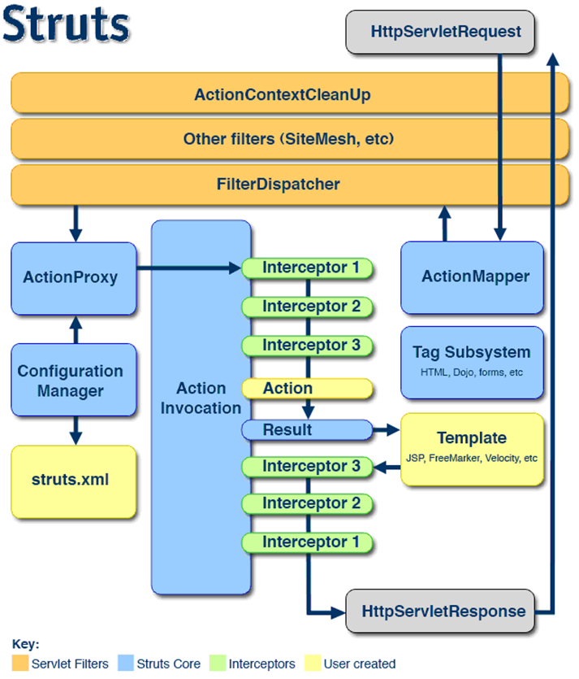
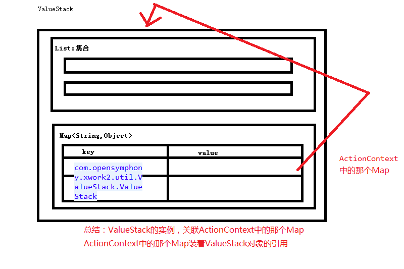

一、拦截器原理
_files/Image [2].png)
_files/Image [3].png)
_files/Image [4].png)
_files/Image [5].png) \
\_files/Image [21].png)
_files/Image [22].png)
_files/Image [23].png)
_files/Image [24].png)
1、过滤器VS拦截器
功能是一回事。
过滤器是Servlet规范中的技术，可以对请求和响应进行过滤。
Struts2 拦截器在访问某个 Action 方法之前或之后对请求动作实施拦截, Struts2 拦截器是可插拔的, 拦截器是 AOP 的一种实现．
- 拦截器栈(Interceptor Stack): 将拦截器按一定的顺序联结成一条链. 在访问被拦截的方法时, Struts2拦截器链中的拦截器就会按其之前定义的顺序被依次调用
d
_files/Image [1].png)
Interceptor 接口
出现init及destroy方法，说明在内存中是单例的，可能有线程安全问题。
Struts 会依次调用程序员为每个 Action 而注册的每一个拦截器的 interecept 方法.
每次调用 intercept 方法时, Struts 会传递一个 ActionInvocation 接口的实例.
ActionInvocation: 代表一个给定动作的执行状态, 拦截器可以从该类的对象里获得与该动作相关联的 Action 对象和 Result 对象. 在完成拦截器自己的任务之后, 拦截器将调用 ActionInvocation 对象的 invoke 方法前进到 Action 处理流程的下一个环节.
还可以调用 ActionInvocation 对象的 addPreResultListener 方法给 ActionInvocation 对象 “挂” 上一个或多个 PreResultListener 监听器. 该监听器对象可以在动作执行完毕之后, 开始执行动作结果之前做些事情
AbstractInterceptor 类实现了 Interceptor 接口. 并为 init, destroy 提供了一个空白的实现
每次调用 intercept 方法时, Struts 会传递一个 ActionInvocation 接口的实例.
ActionInvocation: 代表一个给定动作的执行状态, 拦截器可以从该类的对象里获得与该动作相关联的 Action 对象和 Result 对象. 在完成拦截器自己的任务之后, 拦截器将调用 ActionInvocation 对象的 invoke 方法前进到 Action 处理流程的下一个环节.
还可以调用 ActionInvocation 对象的 addPreResultListener 方法给 ActionInvocation 对象 “挂” 上一个或多个 PreResultListener 监听器. 该监听器对象可以在动作执行完毕之后, 开始执行动作结果之前做些事情
AbstractInterceptor 类实现了 Interceptor 接口. 并为 init, destroy 提供了一个空白的实现
二、自定义拦截器：
1、步骤：
a、编写一个类，直接或间接实现Interceptor接口。(拦截器会驻留内存),一般都选择继承AbstractInterceptor\invocation.invoke();为放行，类似于chain.doFilter(request,response);
_files/Image [6].png)
_files/Image [7].png)
_files/Image [8].png)
_files/Image [9].png)
_files/Image [10].png)
_files/Image [11].png)
_files/Image [12].png)
_files/Image [13].png)
_files/Image [14].png)
_files/Image [15].png)
_files/Image [16].png)
_files/Image [17].png)
_files/Image [18].png)
b、需要在struts.xml中进行定义
1）
2）因为struts2中如文件上传，数据验证，封装请求参数到action等功能都是由系统默认的defaultStack中的拦截器实现的，所以我们定义的拦截器需要引用系统默认的defaultStack，这样应用才可以使用struts2框架提供的众多功能。
如果希望包下的所有action都使用自定义的拦截器，可以通过<default-interceptor-ref name=“permissionStack”/>把拦截器定义为默认拦截器。注意：每个包只能指定一个默认拦截器。另外，一旦我们为该包中的某个action显式指定了某个拦截器，则默认拦截器不会起作用。c、在动作配置中就可以使用了
1）
2）
2、MethodFilterInterceptor接口，实现了此接口后可以配置拦截includeMethods或不拦截excludeMethods哪些方法
三、文件的上传和下载
FileUploadInterceptor有提供怎么的得到上传文件的数据。
1.单文件
1.
public class UploadAction extends ActionSupport {
private File file;
private String contentType;
private String filename;
public void setUpload(File file) {
this. file = file;
}
public void setUploadContentType(String contentType) {
this. contentType = contentType;
}
public void setUploadFileName(String filename) {
this. filename = filename;
}
public String upload(){
String path = ServletActionContext.getServletContext().getRealPath( "/images");
File direction = new File(path);
if(!direction.exists()){
direction.mkdirs();
}
try {
FileUtils. copyFile(file, new File(direction, filename));
return SUCCESS;
} catch (IOException e) {
e.printStackTrace();
return ERROR;
}
}
}
2.struts.xml中
<struts>
<constant name ="struts.devMode" value="true" />
<!-- 配置input视图的错误提示为中文，要加的常亮声明 ：struts.custom.i18n.resources在struts2-core-2.3.15.3.jar中org.apache.struts2的default.properties中可以找到-->
<constant name ="struts.custom.i18n.resources" value= "global" />//其中global要与后边写的properties配置文件路径及姓名相同
<package name ="p1" extends="struts-default">
<action name ="upload" class= "com.itheima.actions.UploadAction" method ="upload">
<interceptor-ref name ="defaultStack">
<!-- 限定文件传输类型 -->
<param name= "fileUpload.allowedTypes">jpg</param >
</interceptor-ref >
<result >/success.jsp </result >
<result name ="error">/error.jsp</ result>
<result name ="input">/upload.jsp</ result>
</action >
</package >
</struts>
3.页面
4、修改input视图的错误提示为中文
第一步:创建新的资源文件 例如fileuploadmessage.properties,放置在src下
在该资源文件中增加如下信息
struts.messages.error.uploading=上传错误: {0}
struts.messages.error.file.too.large=上传文件太大: {0} "{1}" "{2}" {3}
struts.messages.error.content.type.not.allowed=上传文件的类型不允许: {0} "{1}" "{2}" {3}
struts.messages.error.file.extension.not.allowed=上传文件的后缀名不允许: {0} "{1}" "{2}" {3}
第二步:在struts.xml文件加载该资源文件
<!-- 配置上传文件的出错信息的资源文件 -->
<constant name="struts.custom.i18n.resources" value=“cn….xxx.fileuploadmessage“/>
在该资源文件中增加如下信息
struts.messages.error.uploading=上传错误: {0}
struts.messages.error.file.too.large=上传文件太大: {0} "{1}" "{2}" {3}
struts.messages.error.content.type.not.allowed=上传文件的类型不允许: {0} "{1}" "{2}" {3}
struts.messages.error.file.extension.not.allowed=上传文件的后缀名不允许: {0} "{1}" "{2}" {3}
第二步:在struts.xml文件加载该资源文件
<!-- 配置上传文件的出错信息的资源文件 -->
<constant name="struts.custom.i18n.resources" value=“cn….xxx.fileuploadmessage“/>
2.多文件上传（在单文件上传上修改，需要修改的地方如下）
3.文件下载
public class DownloadAction extends ActionSupport {
private InputStream image; //用in有问题的
private String filename; //文件名
private long filesize;
public InputStream getImage() {
return image;
}
public void setImage(InputStream image) {
this. image = image;
}
public String getFilename() {
return filename;
}
public long getFilesize() {
return filesize;
}
public String download() throws Exception{
//给image字节流赋值
String fileRealPath = ServletActionContext.getServletContext().getRealPath( "/WEB-INF/classes/霉女.jpg" );
filename = FilenameUtils. getName(fileRealPath);
//方式一：中文文件要进行URL编码
// filename = URLEncoder.encode(filename, "UTF-8");
filesize = new File(fileRealPath).length();
System. out.println( filename);
image = new FileInputStream(fileRealPath);
return SUCCESS;
}
}
<package name= "p1" extends ="struts-default">
<action name ="download" class= "com.itheima.actions.DownloadAction" method= "download">
<result type ="stream">
<param name ="inputName">image</ param>
<param name= "contentType">application/octet-stream</ param>
<!-- 在struts.xml中使用OGNL表达式获取动作类中属性的值。 调用动作类中的 getFilename()-->
<!-- 中文文件名编码:方式二.使用OGNL表达式,调用URLEncode的静态方法 -->
<!-- 默认OGNL调用静态方法是不行的,需要开启一个常量开关.struts.ognl.allowStaticMethodAccess=true -->
<param name= "contentDisposition">attachment;filename=${@java.net.URLEncoder@encode(filename,'UTF-8')} </param >
<param name= "contentLength">${filesize}</ param>
</result >
</action >
</package >
四、OGNL表达式简介
1).OGNL是Object Graphic Navigation Language（对象图导航语言）的缩写，
它是一个开源项目。 Struts2框架使用OGNL作为默认的表达式语言。
OGNL相对其它表达式语言具有下面几大优势：
1、支持对象方法调用，如xxx.doSomeSpecial()；
2、支持类静态的方法调用和值访问，表达式的格式:
@[类全名（包括包路径）]@[方法名 | 值名]，例如：
@java.lang.String@format('foo %s', 'bar')
或@tutorial.MyConstant@APP_NAME；
设置 struts.ognl.allowStaticMethodAccess=true
3、支持赋值操作和表达式串联，如price=100, discount=0.8,
calculatePrice()，这个表达式会返回80；
4、访问OGNL上下文（OGNL context）和ActionContext；
5、操作集合对象。
Ognl 有一个上下文（Context）概念，说白了上下文就是一个MAP结构，它实现
了java.utils.Map的接口.
OGNL相对其它表达式语言具有下面几大优势：
1、支持对象方法调用，如xxx.doSomeSpecial()；
2、支持类静态的方法调用和值访问，表达式的格式:
@[类全名（包括包路径）]@[方法名 | 值名]，例如：
@java.lang.String@format('foo %s', 'bar')
或@tutorial.MyConstant@APP_NAME；
设置 struts.ognl.allowStaticMethodAccess=true
3、支持赋值操作和表达式串联，如price=100, discount=0.8,
calculatePrice()，这个表达式会返回80；
4、访问OGNL上下文（OGNL context）和ActionContext；
5、操作集合对象。
Ognl 有一个上下文（Context）概念，说白了上下文就是一个MAP结构，它实现
了java.utils.Map的接口.
五、ValueStack和ActionContext（很重要）
1.Struts2中的 ValueStack
ValueStack实际是一个接口,在Struts2中利用OGNL时，实际上使用的是实现了该接口的OgnlValueStack类,这个类是Struts2利用OGNL的基础
ValueStack(值栈): 贯穿整个 Action 的生命周期(每个 Action 类的对象实例都拥有一个 ValueStack 对象). 相当于一个数据的中转站. 在其中保存当前 Action 对象和其他相关对象.
Struts 框架把 ValueStack 对象保存在名为 “struts.valueStack” 的请求属性中,并将struts.valueStack封装在request中
Struts 框架把 ValueStack 对象保存在名为 “struts.valueStack” 的请求属性中,并将struts.valueStack封装在request中
在 ValueStack 对象的内部有两个逻辑部分:
ObjectStack: Struts 把动作和相关对象压入 ObjectStack 中--实现了栈结构的ListContextMap: Struts 把各种各样的映射关系(一些 Map 类型的对象) 压入 ContextMap 中
Struts 会把下面这些映射压入 ContextMap 中
parameters: 该 Map 中包含当前请求的请求参数request: 该 Map 中包含当前 request 对象中的所有属性session: 该 Map 中包含当前 session 对象中的所有属性application:该 Map 中包含当前 application 对象中的所有属性attr: 该 Map 按如下顺序来检索某个属性: request, session, applicationActionContext提供了对ognl上下文对象中数据操作的方法.
_files/Image [19].png)
_files/Image [20].png)
2、ValueStack中的的常用方法：功能一定要知道干什么的。
getContext():返回的是一个Map<String,Object>（为contextMap）
*getRoot():返回的是一个CompoundRoot。
CompoundRoot就是一个ArrayList的子类（就是一个List）。实现了一个栈结构
CompoundRoot():默认的构造方法。实际就是创建一个List集合
CompoundRoot(List):用一个集合来初始化一个CompoundRoot对象
cutStack(int):按照集合中的索引，剪出一个新的List集合
peek():取集合中的第一个元素。get(0)
pop():从集合中删除第一个元素
push(Object):向集合中的第一个元素位置插入数据
peek():CompoundRoot中的第一个元素。get(0)
pop():从CompoundRoot集合中删除第一个元素
push(Object):向CompoundRoot集合中的第一个元素位置插入数据
size():获取 CompoundRoot这个集合的大小
setValue(String,Object):第一个参数，是OGNL表达式。向自己（getContext()）得到那个Map中尝试放东西。
setParameter(String,Object):第一个参数，是OGNL表达式。向自己（getContext()）得到那个Map中尝试放东西。
findString(String expr):返回的是一个String类型的，否则报错.第一个参数，是OGNL表达式。
findValue():返回的是一个Object。第一个参数，是OGNL表达式。
*getRoot():返回的是一个CompoundRoot。
CompoundRoot就是一个ArrayList的子类（就是一个List）。实现了一个栈结构
CompoundRoot():默认的构造方法。实际就是创建一个List集合
CompoundRoot(List):用一个集合来初始化一个CompoundRoot对象
cutStack(int):按照集合中的索引，剪出一个新的List集合
peek():取集合中的第一个元素。get(0)
pop():从集合中删除第一个元素
push(Object):向集合中的第一个元素位置插入数据
peek():CompoundRoot中的第一个元素。get(0)
pop():从CompoundRoot集合中删除第一个元素
push(Object):向CompoundRoot集合中的第一个元素位置插入数据
size():获取 CompoundRoot这个集合的大小
setValue(String,Object):第一个参数，是OGNL表达式。向自己（getContext()）得到那个Map中尝试放东西。
setParameter(String,Object):第一个参数，是OGNL表达式。向自己（getContext()）得到那个Map中尝试放东西。
findString(String expr):返回的是一个String类型的，否则报错.第一个参数，是OGNL表达式。
findValue():返回的是一个Object。第一个参数，是OGNL表达式。
3、ActionContext
static ThreadLocal<ActionContext> actionContext = new ThreadLocal<ActionContext>();
每个线程都会有唯一的ActionContext，且一个线程中只有一个ActionContext。
static ThreadLocal<ActionContext> actionContext = new ThreadLocal<ActionContext>();
每个线程都会有唯一的ActionContext，且一个线程中只有一个ActionContext。
getApplication():返回的是一个Map
getContext():放回的当前线程上的ActionContext对象
getContextMap():返回ActionContext中的那一个Map
getParameters():返回的是一个Map
getSession():返回的是一个Map
getValueStack():返回的是当前线程中的ValueStack实例
get(String):从ActionContext的Map中获取数据
4、ServletActionContext：决定contextMap中会存放哪些数据
总结：都是从ActionContext的那个大Map中获取的。
5、在执行动作方法前，contextMap中放了以下东西在contextMap中
key | value | 备注 |
request | ServletRequest中的那个Map |
|
session | HttpSession中的那个Map |
|
application | ServletContext中的那个Map |
|
parameters | 请求参数Map<String,String[]> |
|
attr | 也是一个AttributeMap | 获取数据依次从contextMap中的requestMap、sessionMap、applicationMap中搜索 |
六、防止表单重复提交
九、Struts与Spring的整合
十、Struts的综合案例：CRUD